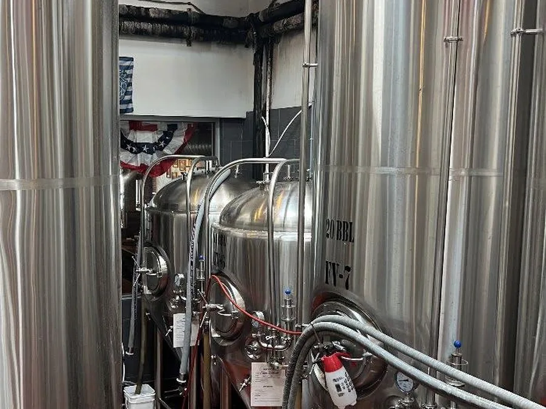
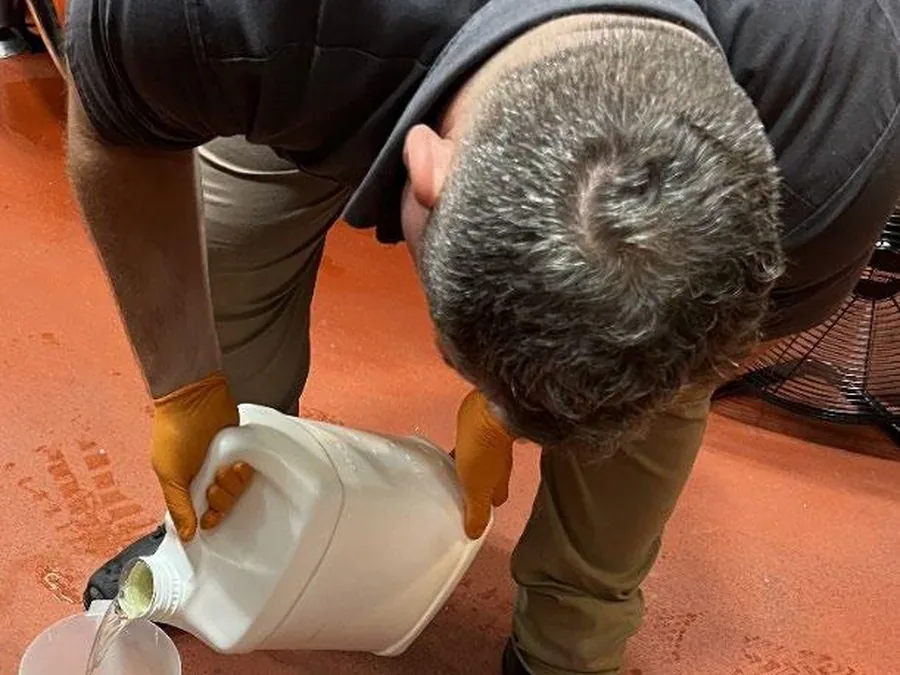
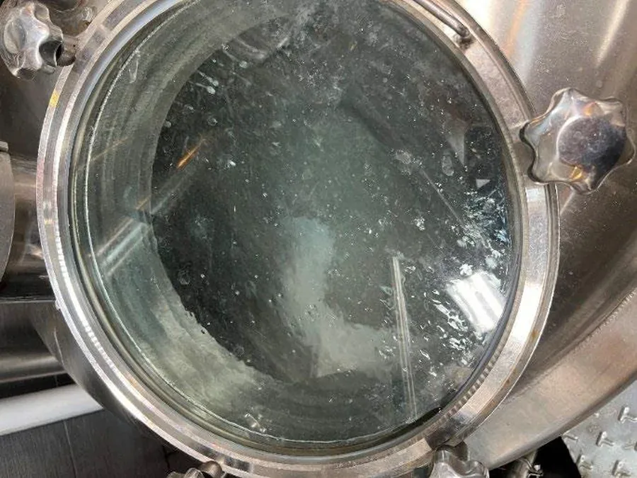

Clean food environments with HMIS 0-0-0 options.
Breweries, distilleries, wineries, processing floors, hood filters, and drains cleaned around staff and active food spaces.
How VertKleen fits Food & Beverage work.
Tanks, heat exchangers, and CIP/SIP lines usually need caustic and acid sequences that are hard on staff and effluent. In a Carib Brewery lab evaluation, VertKleen HCR matched conventional CIP acid cleaning at less than half the concentration and left no nitrogen or phosphorus in the effluent.
See the proof
What Food & Beverage buyers replace first.
Brewery and distillery work centers on CR and HCR sequences for tanks, heat exchangers, protein soil, beer stone, and hood or drain cleaning.
Bundle: CR for alkaline wash, HCR for acid wash, CRHD for grease, Neutral where sensitive surfaces or seals matter.
VertKleen products for Food & Beverage.
Replacement options for the legacy chemistry this work usually relies on.
VertKleen on Food & Beverage sites.
Real jobs pulled straight from the VertKleen field library.



Plan a lower-hazard Food & Beverage program.
Choose a quote, audit, or sample request. MASEST routes the request by industry, product, and volume.